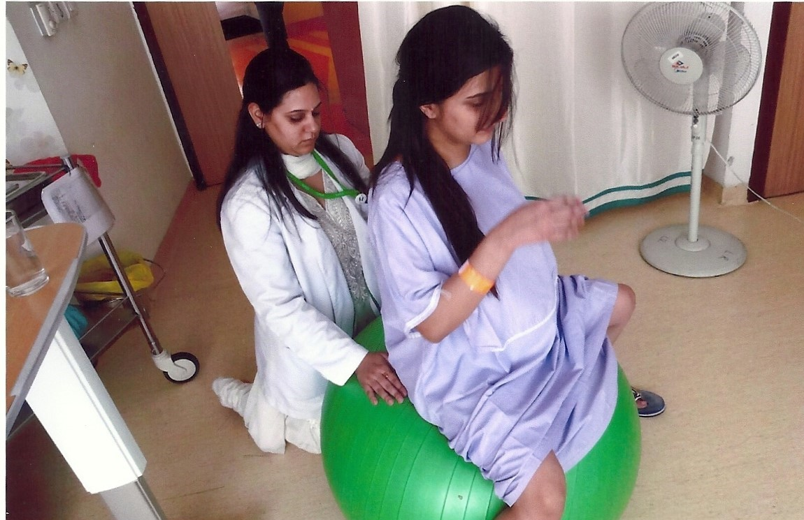

Happy Bumps Academy is the brain child of Dr. Ganga Anand as an initiative to provide dynamic
training and continuing education opportunities for healthcare professionals around the world. We
offer quality programs and support for professionals who nurture families through their pregnancy,
labor, birth, postpartum and lactation.
Dr. Ganga Anand started her career as a Physiotherapist and is an experienced Physiotherapist &
Lactation Consultant. She holds a Master’s degree in Physiotherapy (Neurology) and has an overall
experience of 15 years as a Physiotherapist with specialization in pre & post-natal care. She has
worked with many healthcare institutions such as Fortis Healthcare, Alchemist Hospital, Max Smart
Super Speciality Hospital, Apollo Cradle & Venkateshwar Hospital.
She is a certified Lactation
Consultant helping new mothers breastfeed efficiently and a labor support expert helping mothers
during labor for easy and natural delivery. Realising the importance of fitness in pregnancy and
childbirth. She has been working with pregnant women conducting prenatal and postnatal fitness
classes. She is also a certified Yoga Instructor and an Infant massage instructor. She has also
conducted breastfeeding awareness and training sessions for nurses for many hospitals in Delhi NCR.
She is passionate about her work and is dedicated in helping patients recover completely. Being a
mother herself, she can also relate to the emotions and physical changes that occur during and after
pregnancy. She is known to have an impressive treatment skills and has been acknowledged widely for
her versatile and patient-centric approach.
Membership:
Member of Indian Association of Physiotherapist
Member of International Lactation Consultant Association
Member of Medela India Lactation Consultants Club
OUR VISION

At Happy Bumps Academy, we envision a world where every expectant mother feels empowered and confident throughout her pregnancy journey and also to empower birth professionals with the knowledge and skills necessary to provide compassionate and evidence-based care to families while also fostering a supportive community of like-minded individuals. Join us on this journey to make a positive impact on the lives of families around the world.
OUR MISSION

Our mission is to improve birth outcomes and save lives by offering training and
certification programs for health care professionals, para-professionals, maternity care
systems and medical institutions and to ensure that our graduates are prepared with the
knowledge and skill set that sets them on a path to personal and professional success at
an affordable price.
At Happy Bumps Academy, we prioritize our students needs by providing a flexible online learning
program. Our dedicated team of expert teachers ensures that every student receives personalized
support through various communication channels such as phone, email, or video sessions.
Curate Life-Changing Educational Experiences
For us knowledge is power and helping women to achieve a
calm and confident labour and birth directly relates to them having the knowledge to make the right
decisions for themselves, and their babies.
Our courses are action-based learning experiences with curated assignments designed to
systematically build the assets you need to launch into service. We love resourcing students
with valuable assets and tools so they quickly reach the real life breakthroughs that matter
for their families.
Our Academy Is Student-Focused
We define our success by your success, and that translates into practical ways. We don’t have lengthy paperwork, pointless assignments, or impossible
submission requirements. Our training, re-imagined from the ground up is built for our
students accelerating them through the certification and into sustainable service.